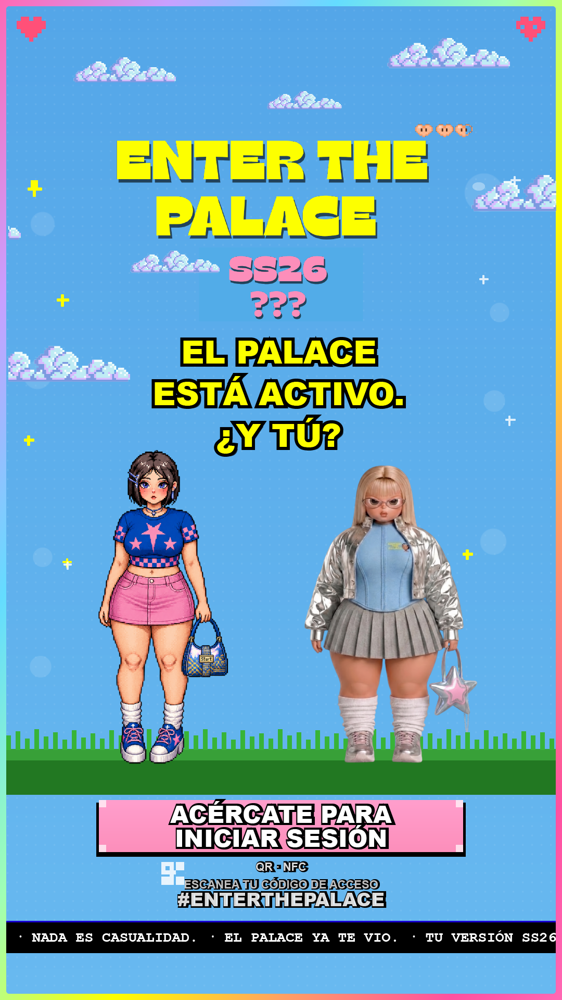
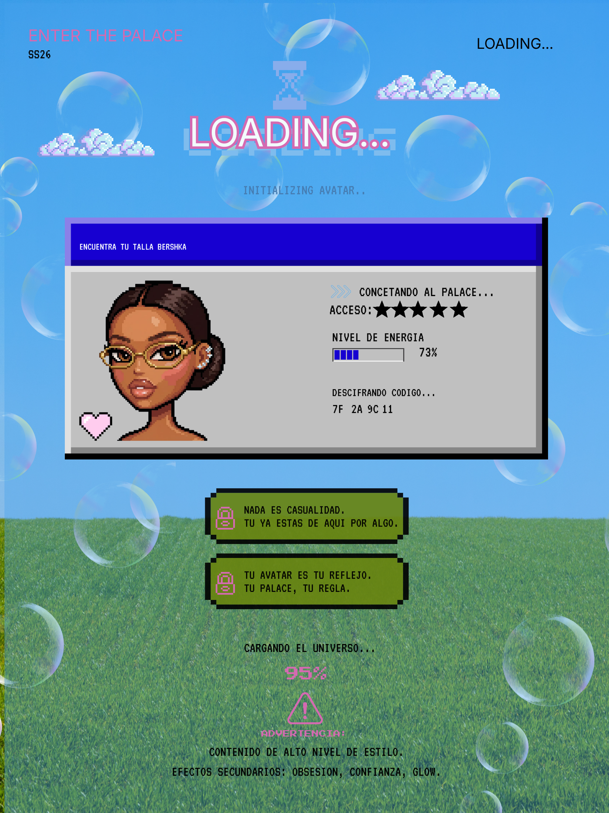

ENTER THE PALACE · SS26 · Bershka — proyecto académico, IED Madrid
Proyecto colaborativo con mi compañera de equipo · mi rol detallado abajo ↓
// Cargando sala de proyecto
Enter The Palace
En 1995, The Palace no te pedía la talla para entrar a la sala. Esta es la reconstrucción de esa idea como sistema real de tallaje para Bershka SS26.
CARGANDO EL PROYECTO... 95%
⚠ ADVERTENCIA: esta sala documenta decisiones, no solo resultados. Contenido: investigación, patronaje, datos, producto, campaña.
↓ scroll para entrar
01
Origen → Decisión estructural
The Palace (1995–2002) fue la primera sala de chat donde nadie pedía credenciales para entrar: había concursos de vestuario y cada persona construía su propia habitación. Esa referencia es el punto de partida — tomarla y leerla como problema real de tallaje en moda es la decisión creativa central del proyecto.
idea original · investigación · dirección creativa: yo
De "todos entraban" a "todos los cuerpos entran"
No está en el Palace original de forma literal — es mi lectura: si en 1995 nadie pedía credenciales para entrar a la sala, en Bershka nadie debería tener que pedir "la talla especial" para entrar a la colección.
decisión: yo
El patronaje empieza en el Bloque B, no escala desde XS
Consecuencia directa de la decisión anterior: construir los patrones desde el bloque curvy (Bloque B) como punto de partida, no como talla añadida al final. Bloque A (recto/andrógino) y Bloque C (modificador alto/petite) se derivan del mismo sistema, no lo contradicen.
De "cada quien construye su habitación" surge el avatar personal dentro de la web de Bershka, con el que además puedes conversar y formar comunidad — como en el chat original.
idea: las dos
02
El sistema que captura el dato
Este es el propósito real del proyecto: la experiencia Palace existe para mantener actualizado el tallaje de la marca. Cada punto de contacto — web, cúpula, espejo, camerino — es también un punto de captura de datos corporales, con dos modos que alimentan la misma base: modo autoservicio (creas tu perfil en la web con tus medidas) y modo asistido (en tienda, si no conoces tus medidas reales, alguien te guía y te mide).
1 · Perfil en la web
Creas tu avatar en la web de Bershka con tus medidas. Este perfil viaja contigo a la tienda física.
diseño y lógica de funcionamiento de la web: yo
2 · Llegada a tienda
Un avatar te invita a entrar; señalética tipo flechas te guía hasta la Cúpula.
merchandising y señalética interior: yo · idea de la cúpula: mi compañera
3 · Medición (si hace falta)
Si no conoces tus medidas reales, una persona del equipo te guía y te mide — modo asistido, complementario al escaneo automático de la Estación 02.
4 · Captura del dato
Los datos se depositan en las tablets disponibles para construir o actualizar tu perfil de tallaje. Este es el punto donde la experiencia se convierte en información útil para la marca.
5 · Cápsula / Try-on
Entras a la cápsula: seleccionas piezas y alguien las tiene preparadas, o deambulas y escoges libremente. Vas al camerino, te pruebas.
6 · Contenido + salida
Se genera un video corto que puedes compartir con los hashtags del proyecto. Al pagar, recibes un código para participar en el concurso.
Por qué importa: las medidas que se introducen no son solo para tallar la prenda de ese día — son datos que la marca usa para entender cómo evoluciona el cuerpo de su clientela en el tiempo.

Cúpula · Espejo AR
Diseño de la instalación. Idea original: mi compañera. Desarrollo del diseño: yo.
Sala Cúpula, interior
Vestíbulo virtual + fitting room, Bershka Gran Vía 25.

Tablet · captura de perfil
"Encuentra tu talla Bershka" — interfaz de creación de perfil en el punto de medición.
03
La web funcionando
El punto de entrada digital del sistema: aquí se crea el avatar y el perfil de medidas que después viaja a la tienda física.
diseño, lógica y funcionamiento: yo
QR / NFC — conecta el perfil web con el punto físico de la Cúpula.
04
Producto por bloque
Cada prenda nace del mismo patronaje que alimenta el sistema de datos. Diseño y selección final de las prendas de colección: mío, con criterio compartido con mi compañera en color y styling.
diseño CLO3D + fichas técnicas: yocolores de colección + styling: las dos
Accesorios, calzado y baby tee: diseñados por mi compañera en CLO3D. Sobre la baby tee, yo apliqué el print/diseño final.
accesorios, calzado, base baby tee: mi compañeraprint sobre baby tee: las dos
Sneaker · turntable
Sneaker charm · detalle
Fundas · merch extendido
05
Campaña de embajador
Producción de la campaña: búsqueda de locaciones vía IA y dirección de la mecánica del concurso, mi compañera. Flyers de tienda, míos.
locaciones + mecánica del concurso: mi compañeraflyers de tienda: yo
Pantalla de acceso · elevador
Versión oficial, SS26.
Nota de producción: existe una variante regenerada de esta pieza con errores tipográficos ("SS28", "NADA EE CASUALIDAD") — descartada, se usa esta versión como la oficial.
Sello de marca
Logo del universo Palace aplicado a campaña y merch.
Sobre la mecánica de "gana quien más likes saque": es una decisión de equipo que, mirada junto a la tesis del proyecto, tensiona con ella — un criterio de validación por apariencia no es lo más coherente con "nadie pedía la talla para entrar". Lo señalo aquí como lectura crítica propia, no como corrección retroactiva del trabajo conjunto.
06
Créditos del proyecto
Proyecto realizado en pareja para la Universidad, propuesta dirigida a Bershka. Reparto real de responsabilidades:
Mi rol
Idea original: lectura de The Palace (1995) como problema de tallaje
Investigación y dirección creativa general
Decisión estructural: patronaje desde Bloque B
Diseño de prendas en CLO3D + fichas técnicas
Creación de avatares y su estilo visual
Diseño y lógica de funcionamiento de la web
Diseño de la cúpula (a partir de la idea de mi compañera)
Merchandising interior y colocación en tienda
Flyers de tienda
Rol de mi compañera
Idea original de la cúpula
Diseño de accesorios, calzado y baby tee (base) en CLO3D
Búsqueda de locaciones de campaña (asistida con IA)
Diseño de fundas de celular
Diseño y organización de la diapositiva inicial de presentación
Mecánica y decisión final del concurso de campaña
Decisiones conjuntas
Concepto de avatares como puerta de entrada / comunidad
Colores de la colección
Selección final de prendas (a partir de mis propuestas de diseño)